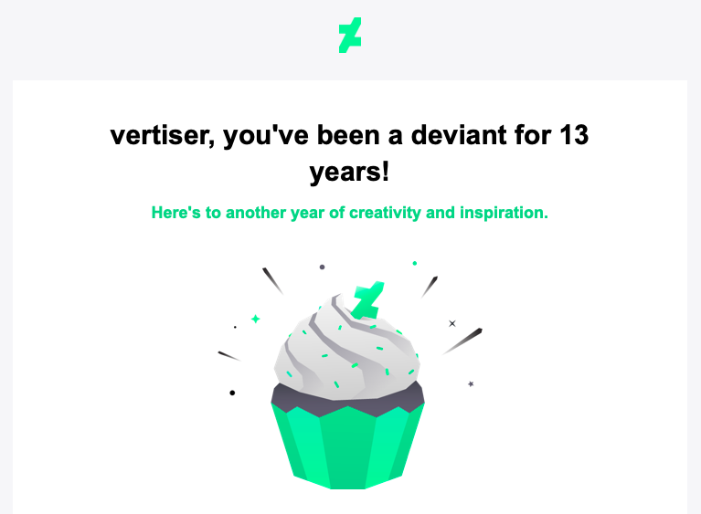

13 years on deviantART
This morning I was surprised by a message from deviantART, stating “Happy Anniversary, vertiser!”

vertiser, you’ve been a deviant for 13 years! Here’s to another year of creativity and inspiration.
Apparently I created an account on deviantart.com on the 6th of February 2011. I must admit I only remember the year, not the exact date, and if not for that e-mail, I would not have guessed that today is my deviantART anniversary. At this moment deviantART is one of the places on the Internet where my presence is the longest. The earliest still active profile is my YouTube account, set up in January 2005.
I had originally joined deviantART in an endeavour to explore the art of photography. 2011 was the year when I upgraded from my compact camera (well, it was Konica Minolta Dimage Z3, so it was not that compact) to a Digital Single-Lens Reflex Camera, namely Nikon D90. It was a huge upgrade for me, basically in every aspect of photography. Better sensor, bigger resolution, a true pentaprism viewfinder instead of a poor electronic one in Minolta. Interchangeable lenses and plethora of accessories, like filters and flashes, made it a wonderful piece of equipment for me.
But I had joined deviantART before I even bought that Nikon. I wanted to see how others work with light, composition, objects and people in order to create an interesting piece of art. DeviantART was like an infinite source of inspiration, curiosity and motivation to expand my knowledge, try out some new ideas, improve the technical aspect of my photographs. With time I made some connections with other members of deviantART community, joined some groups, engaged in discussions and conversations on various topics related to art and photography. DeviantART was a happy place back then.
Unfortunately there were some rather controversial changes in deviantart.com look, features and core aspects. One things that caused the mass exodus of users was the forced change into a new layout, which, in my opinion, has completely destroyed deviantART’s originality, making it just one of hundreds of photo- and art-sharing websites. There were some other changes that followed, which alienated big part of the community even further. Still, there is some magic left in deviantART and its longevity, and perhaps the website will rise again in the future.
I am not an active user of deviantART nowadays, mostly because I do not publish any new photographs or artworks. I hope to return to that website at some point in the future. Perhaps I will be there on my 14th anniversary or maybe sooner? Time will tell.
This is article no. 10 from the 100 Days To Offload series.